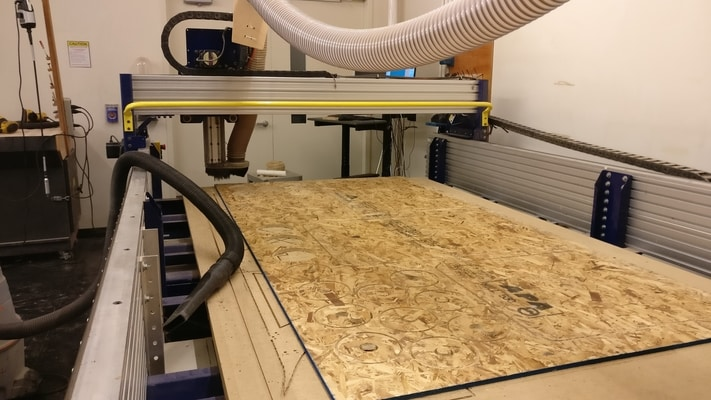

So this week I end up building a coffee table for my room (I needed one anyway). An idea I was playing with for a long time was to make something based off of this idea...
I ran into this at an art musuem. I couldn't quite figure out what I wanted to do. I was mainly trying to figure out how to use the interior wood. Anyways, just an idea to keep note. I may come back to this.
I started out thinking about a stack of rotating units of wood. Something like a bunch of squares that could rotate and make cool shapes. Then I had recently came across a rotating coffee table from a friend's house. They look like one of these . So then I opted for a rotating coffee table.
I used Autodesk Fusion 360 to sketch the design. End result should be a dxf file.
I didn't know what the diameter of the holes should be, so I did need to do some test cuts to figure that out. The machine can actually cut vectors along the inside, outside, or on the line.
I didn't know too much about how to actually use the inside/outside reliably. I decided to try several measurements but cutting along the lines. I had this 1.5 inch pipe of PVC laying around. The diameter in the sketch ended being 1.45 inches.
This would turn out to be incredibly important structually.
After processing the vectors and generating the tool path, it was time to cut.
The whole cutting processing took ~30 minutes. It turns out that the bit didn't go through all the way. Gavin helped me to a quick single deeper pass over the entire wood sheet again. The difference here is that the machine will usually do two passes. One pass is through an intermediate depth, then a second pass will cut the wood through all the way.
Below we can see the edge quality of the cut (which will depend on the type of bit). The top side of the cut is really good. The bottom side, not so much. This would require sanding / filing those edges.
After everything, I had some 28 circular rings and 3 large sheets. I knew I needed the 3 sheets, but I just fit in however many I could for the rings. The setup is to insert the pieces one at a time through a pvc pipe.
My one huge concern was structurally stability. Turns that that is does okay. The key part was to use a large sheet on the very bottom to give it stability.
The table top sections are able to rotate easily and for the most part it can at least hold my laptop. Would not recommend sitting on this table.